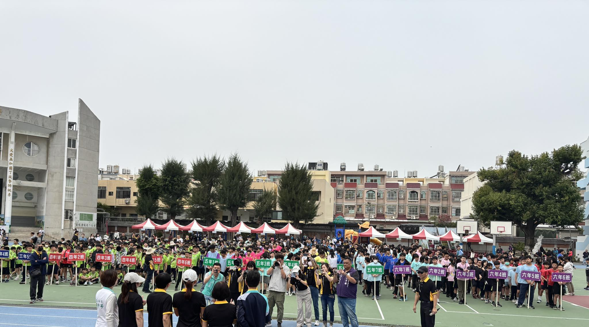
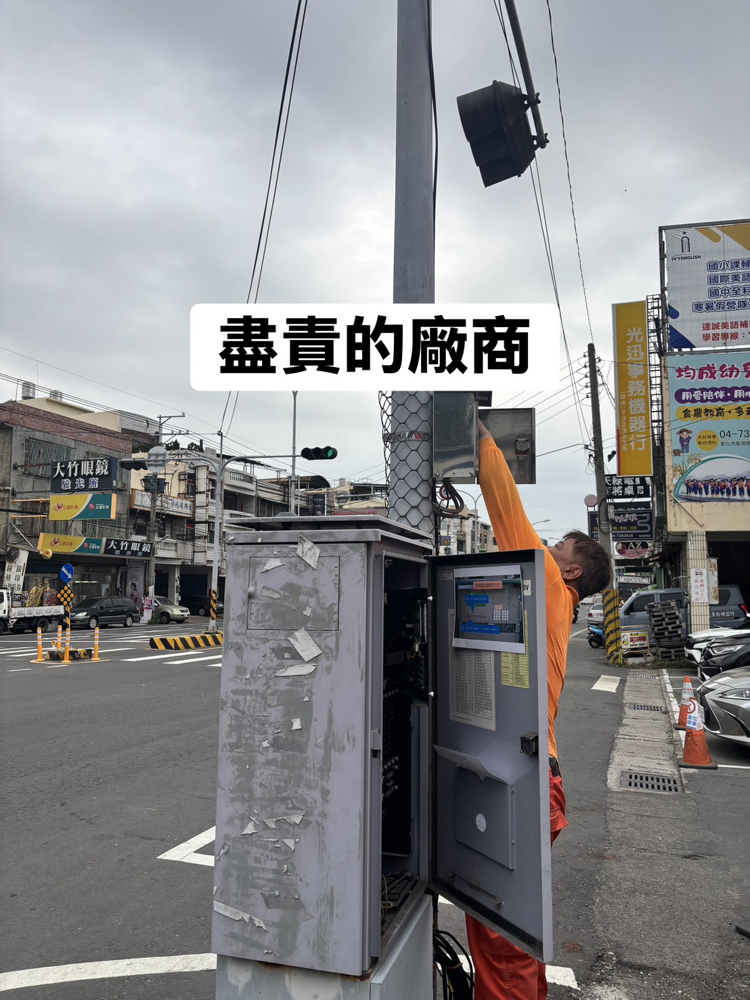
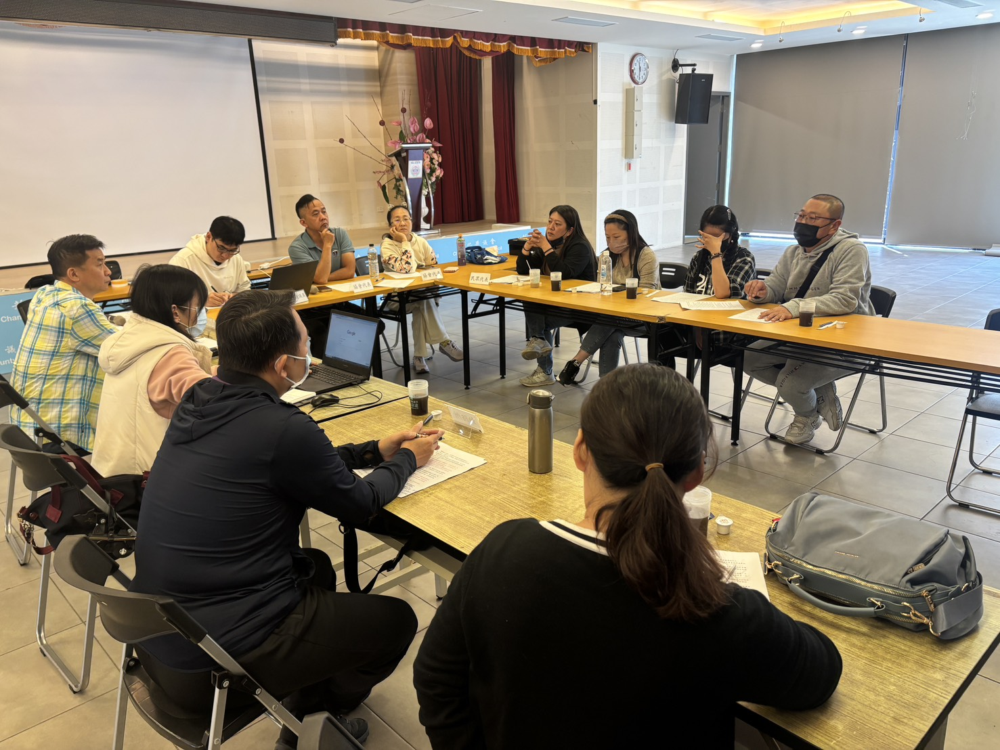
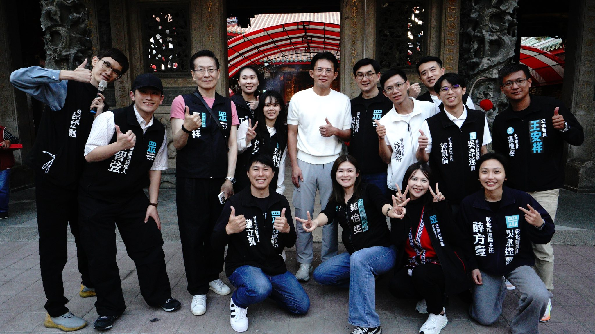

01
更安全的交通環境
SAFETY ／ TRAFFIC東區交通樞紐優勢明顯（台 74 線、國道一號、國道三號），但路口安全、人行空間、號誌維護仍有改善空間。針對交通號誌定期巡檢、爭取改善高肇事路口、推動人本交通與行人友善動線。
從實際維護交通號誌等基層工作做起，讓每一個十字路口都禁得起檢驗。
近年來，我在地方服務第一線工作，接觸到許多民眾最真實的需求與困難。也看見：基層政治如果能夠更積極、更貼近人民，很多問題其實可以更早被看見、更快被處理。我決定投入此次選舉，是希望能承擔更直接的責任，成為彰化市東區市民與公部門之間更有效率的橋樑。
我民國 84 年 5 月於彰化出生，現年三十歲，家中排行老大，畢業於國立嘉義大學生物事業管理學系。父親從商，母親為退休教師——一般家庭給了我量入為出、穩健務實的人格底色，也讓我更能站在市民角度思考政策與建設需求。
目前我擔任吳韋達議員服務團隊助理（東區主任），協助處理選民服務、地方建設陳情、政策研究及公共議題溝通等事務。同時，我也是彰化縣青年諮詢委員會「城市發展組」組長。這些角色，讓我更清楚知道：一位真正合格的民代，不應只做清水溝、修路燈的「高級里長」，更不應追求好大喜功、最終造成公帑浪費。
東區的地理位置接近台中，有台 74 線、國道一號與國道三號，未來也有台中捷運綠線延伸、台鐵捷運共構金馬站等重大建設——東區具備相當優秀的宜居發展潛力與條件，但現階段距離真正宜居，仍然還有一段路。我希望推動東區朝向更安全交通環境、更完善生活機能、更舒適公共空間，以及更具前瞻性的整體規劃發展，讓東區不只是通勤方便，而是真正適合生活、適合成家、也適合下一代成長的地方。
地方政治不應只是被動等待陳情、零碎處理個案。真正有價值的地方政治，應該主動發現問題、提前提出對策、持續追蹤進度，並且讓民眾清楚知道事情的所有進度與成效——這三件事，是我問政的三條基本線。
不在辦公室裡等陳情案上門，是走出去主動勘查、主動詢問、主動研究數據。從第一線議員助理的工作經驗中，我深知：絕大多數的問題，都是「被看見的太晚」。
不只解決眼前個案，是看到問題的結構，提前規劃可執行的對策。要求政策有方向、建設有配套、預算有效益——把每一塊公帑用在會讓東區變得更好的地方。
不是「處理完就結束」，是讓民眾清楚知道事情的所有進度與成效。把地方政治盡可能透明公開，讓彰化的地方政治，重新讓人民產生希望、做出有感的結果。
不只是清水溝、修路燈的瑣碎服務，是城市格局的整體規劃。六條政見都基於東區的真實條件——交通樞紐、捷運願景、青年返鄉——提出具體可執行的方案。
東區交通樞紐優勢明顯（台 74 線、國道一號、國道三號），但路口安全、人行空間、號誌維護仍有改善空間。針對交通號誌定期巡檢、爭取改善高肇事路口、推動人本交通與行人友善動線。
從實際維護交通號誌等基層工作做起，讓每一個十字路口都禁得起檢驗。
未來台中捷運綠線延伸、台鐵捷運共構金馬站等重大建設，將徹底改變東區的交通結構。我會在代表會層級協助監督地方配套規劃——周邊街廓改善、停車場、轉乘動線、商圈整合，讓重大建設不只是建設，更是生活機能的全面升級。
不做「好大喜功的硬體建設」，是真正可以坐下來、走進去、用得到的公共空間。公園優化、里民活動中心改造、街角微型綠地——把日常生活的尺度做好，讓東區不只是通勤之地，是真正適合生活、適合成家、適合下一代成長的地方。
從擔任議員助理的第一線經驗，我看到長者受詐騙的真實困境。推動反詐騙宣傳網絡、社區長者識詐課程、與警政單位合作建立預警機制——把第一線最真實的需求，化為可執行的保護網。
為動物受虐發聲。推動完善的動保網絡、流浪動物 TNVR、毛孩友善公共空間規劃，並監督動保預算的執行成效。讓東區成為對毛小孩友善、對所有生命都有尊嚴的城市。
從母校大竹國小等校園活動的長期參與出發，建立青年返鄉支持機制：實習媒合、地方品牌策展、創業諮詢。也作為彰化縣青年諮詢委員會城市發展組組長，把年輕世代的聲音，帶進地方治理的決策現場。
不是參選才開始，是擔任議員助理兩年多以來累積的日常。每一張照片，都是東區或彰化某一個真實的場景。




民代不應只是反應問題的人，
更應該是促成溝通、推動改善、監督落實的人。
無論是交通號誌、長者照護、毛孩問題、青年議題，或是任何地方建設陳情——電話、Email、社群私訊都歡迎。每一件案件都會建檔、追蹤、回覆。
東區要更新，換少年來拚。
做東區市民與公部門之間，更有效率的橋樑。